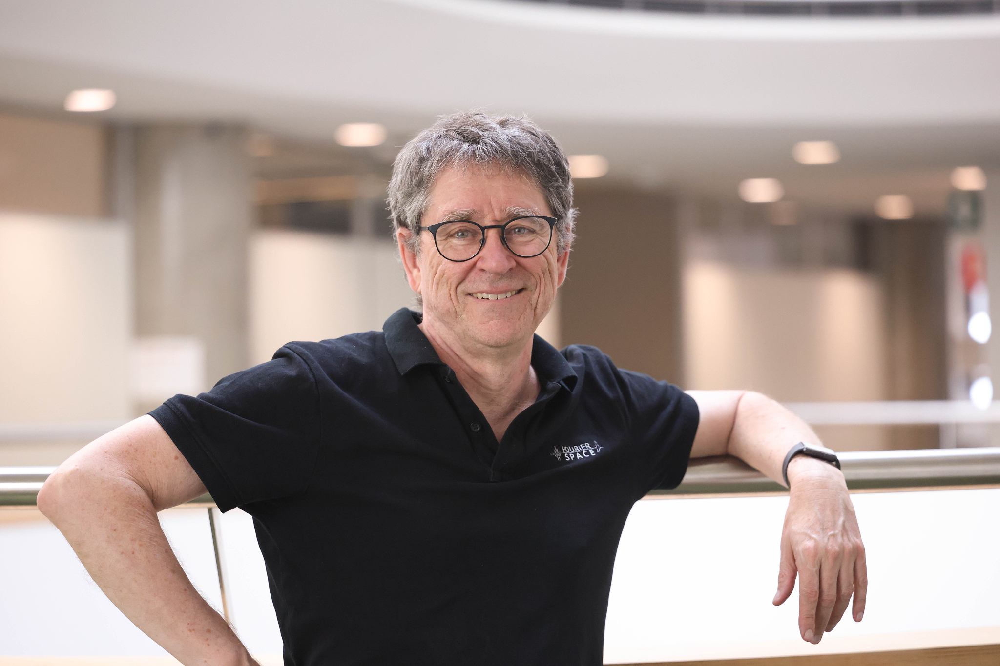
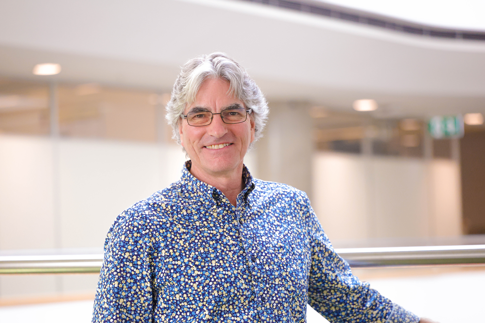
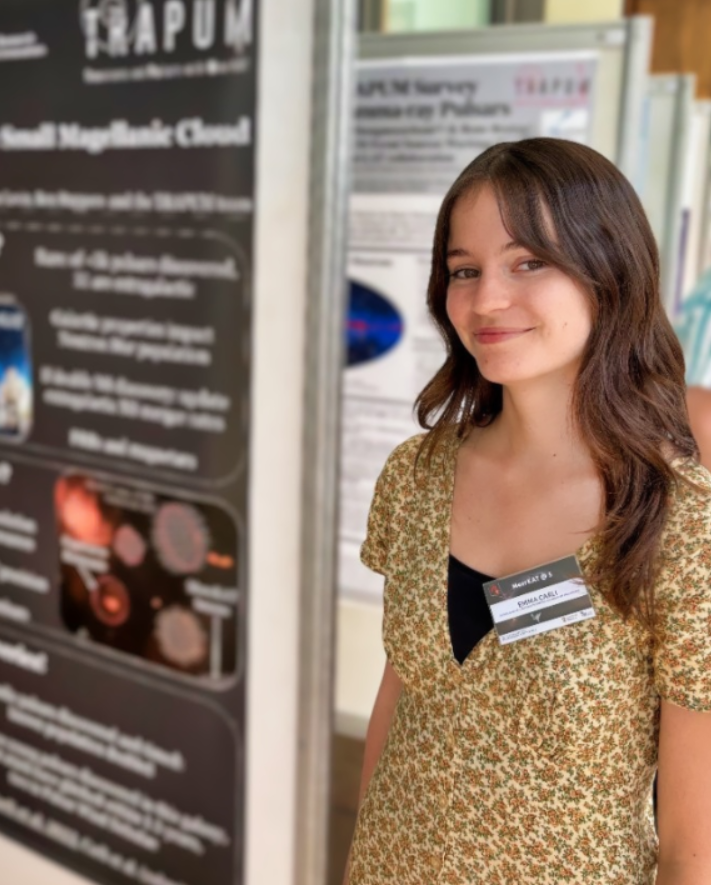
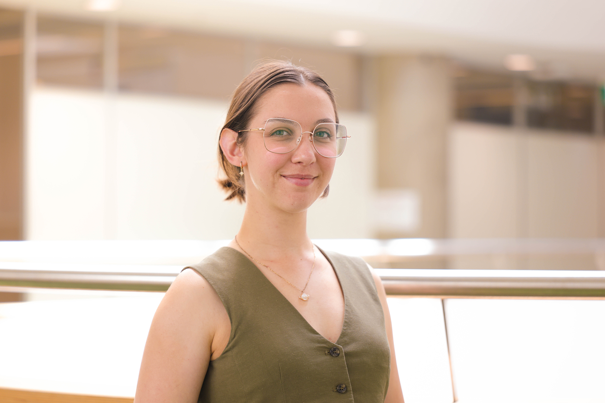
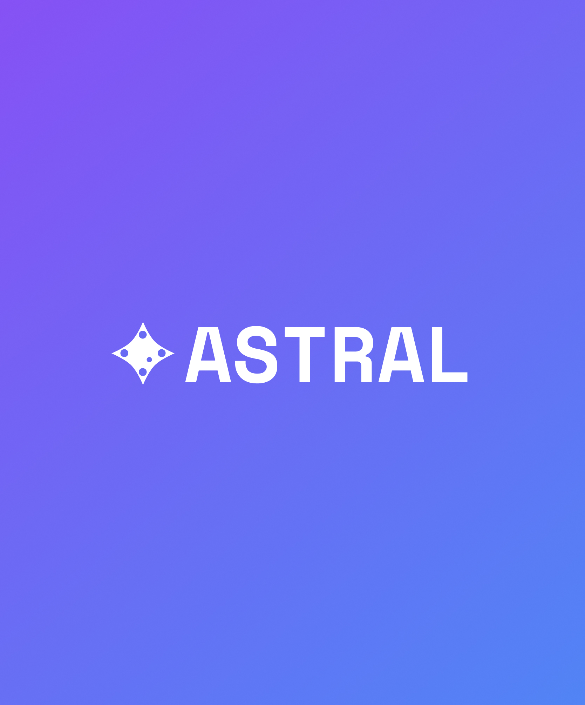
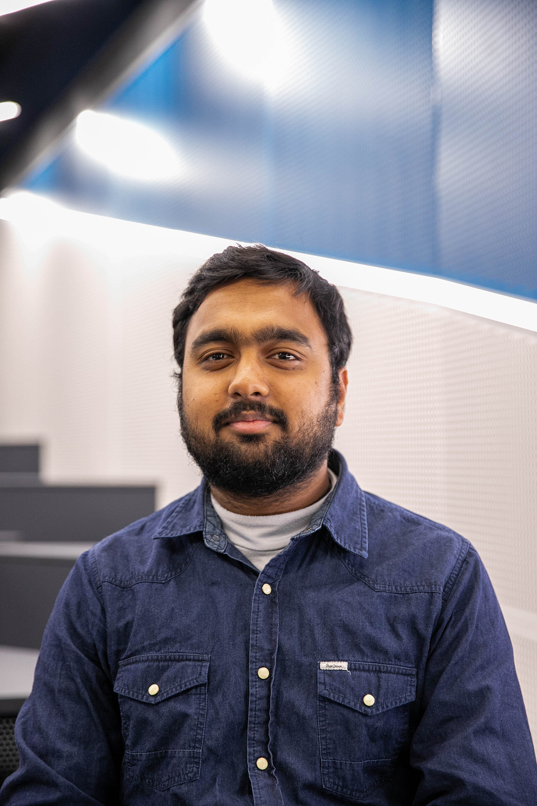
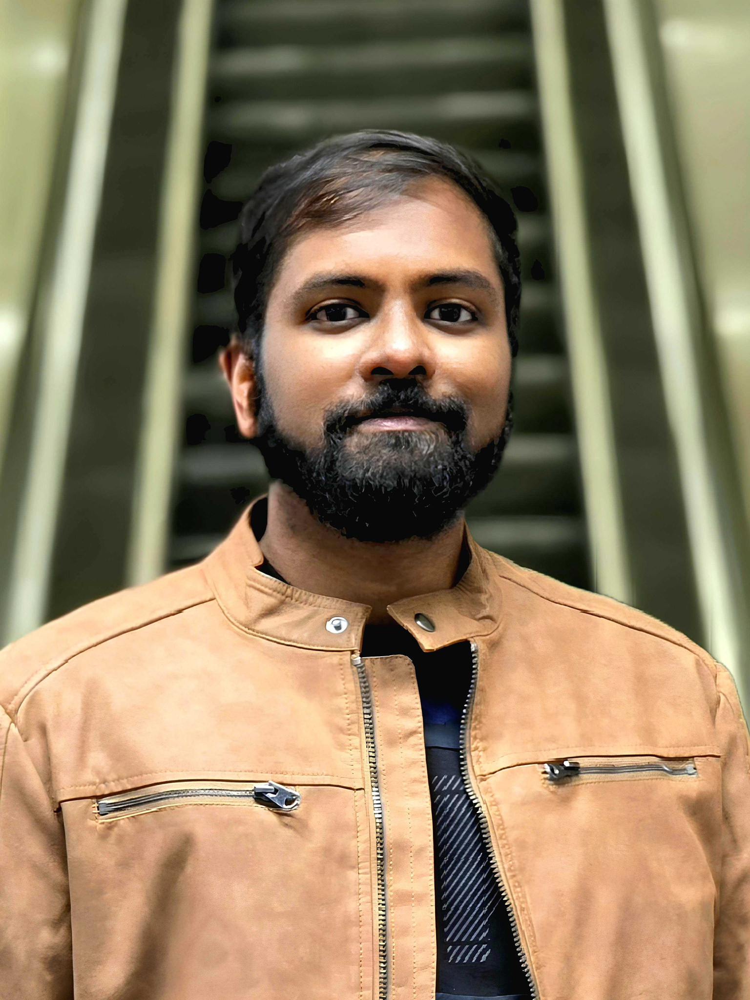
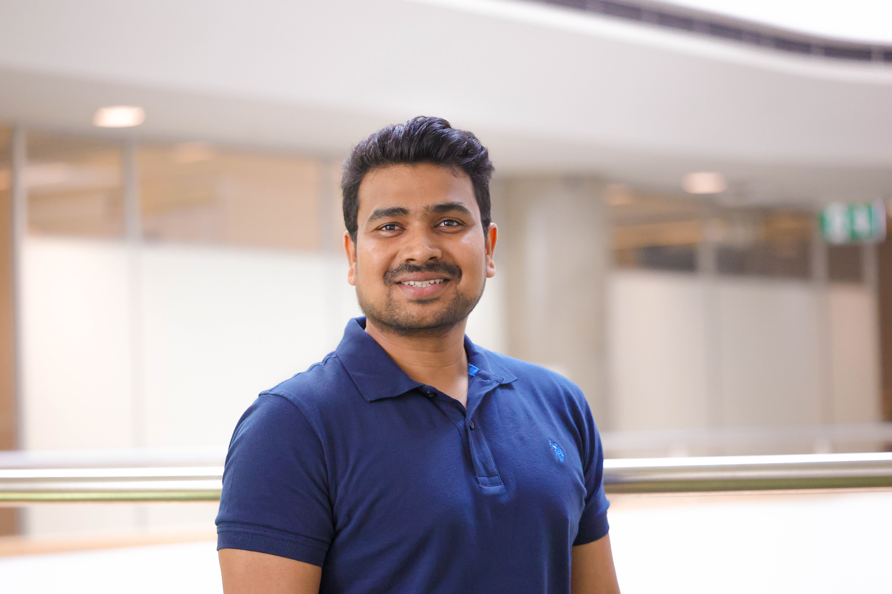
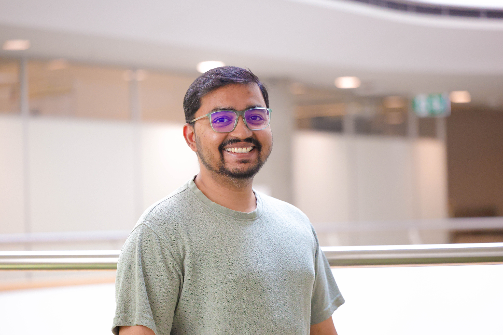
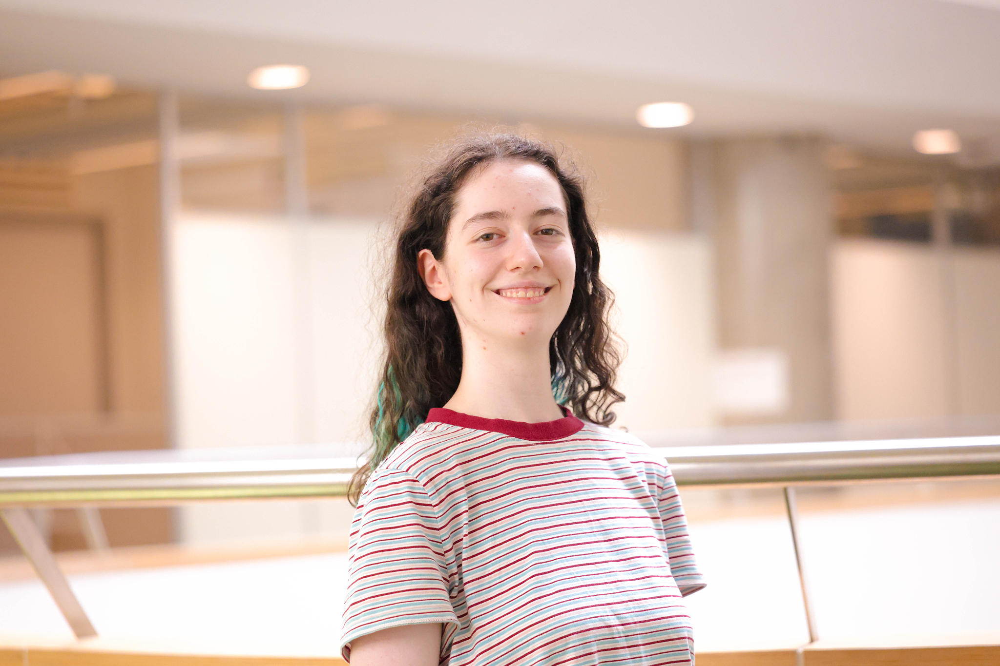

Prof. Matthew Bailes
Founder
ASTRAL Director
30+ Years Experience
Pulsars
Gravitational Waves
Fast Radio Bursts
Professor Matthew Bailes is known for his pioneering work on millisecond pulsars and fast radio bursts and is the founder of the ASTRAL program. His PhD on at ANU was awarded the Crawford Prize in 1990, and he won the CSIRO medal for his work that unveiled many of the brightest millisecond pulsars in the Southern hemisphere. He was awarded the Australian Research Council's Endeavour, QEII, Senior and Laureate Fellowships, and has led two successful Centre of Excellence bids on gravitational wave discovery. He is currently the Director of the OzGrav Centre of Excellence. In 1998 he founded the Swinburne Centre for Astrophysics and Supercomputing, now one of Australia's major astronomical research centres.

Dr. Chris Flynn
Researcher
Lead Supervisor
30+ Years Experience
Stellar Photometry
Astrometry
Optical Astronomy
Dr. Chris Flynn has over 30 years experience working in optical and radio astronomy, with an emphasis on measuring the matter content of the universe. He obtained his PhD in 1989 from Mount Stromlo Observatory at the Australian National University, has worked in Heidelberg Germany, Copenhagen Denmark, in Princeton and Columbus in the US and at the Tuorla Observatory in Finland. During this period he worked primarily with space-based optical observatories, such as Hipparcos,the Hubble Space Telescope, and Gaia. He has been a senior researcher in the Centre for Astrophysics and Supercomputing at Swinburne University of Technology for the last decade, working on Fast Radio Bursts and pulsars.

Hendrik Combrinck
Lead Supervisor
Researcher
ASTRAL 2024 Alumni
pulsars
radio astronomy
Blender Visualisation
Hendrik Combrinck is a second-year PhD student researching radio pulsars and pulsar timing using the MeerKAT radio telescope. He completed his Bachelor of Science in Physics and Mathematics in South Africa before coming to Australia, where he began his involvement with ASTRAL as a student. He is now proud to serve as an ASTRAL Lead Supervisor, helping to shape and lead several of the projects undertaken by the institute.

Rudra Sekhri
Program Coordinator
Science Communication and Outreach Lead
ASTRAL 2024 Alumni
pulsars
fast radio bursts
stellar photometry
Rudra Sekhri is an award-winning researcher and science communicator featured by ABC and SBS Hindi. His honours include the City of Whittlesea’s Young Citizen of the Year, the Australian Defence Force Future Innovators Award and Whittlesea Community Connections’ Innovation & STEM Award. Working with OzGrav at Swinburne University of Technology, he conducts peer-reviewed research across astrophysics and physics, alongside work in software development, data science and artificial intelligence, including AI evaluation at Affinda. He founded and led TEDxSwinburne University, founded the science communication platform The Astropods, and has worked with the City of Whittlesea on environmental innovation and community initiatives. At ASTRAL, he serves as Program Coordinator and Science and Communication Stream Lead, coordinating student research experiences and mentoring young people to communicate science creatively and engage the wider community.

Tristan Than
Program Coordinator
Visual and Immersive Design Lead
ASTRAL 2025 Alumni
Youth Leader
Creative Technology
Educational Outreach
Tristan Than is a youth leader whose work revolves around achieving societal empowerment through a blend of technical expertise and organisational leadership. As the recipient of the 2025 VCE Premier's Award in Algorithmics (HESS) and the prestigious VCE Leadership Award in 2026, Tristan has worked with several organisations including Monash University, Voratix, and the Knox City Council to create real change for these communities. His technical abilities lie in creative technology and game design, where he first developed an outreach game to teach adolescents about the wonders of the solar system through the 2025 MilliPheDe Program, and has continued to work with OzGrav to develop immersive experiences for Swinburne's Virtual Universe.

Nandini Vyas
Research and Data Analysis Lead
science communicator
ASTRAL 2025 Alumni
stellar photometry
space technology
science outreach
Nandini Vyas is a physics undergraduate student with a passion for space technology and the real-world impact that it has in our lives. Since participating in the 2025 MilliPhede program, she has been conducting research about solar twins, which are stars that closely resemble our own Sun. She also enjoys sharing her passion more widely through science communication on Instagram, rooted in her belief that good science emerges from engagement and collaboration with wider audiences. She is also proud to be the Research and Data Analysis Stream Lead for the 2027 program, supporting others as they find their own path into research and outreach.


Dr. Emma Carli
Guest Supervisors

Dr. Kirsten Banks
Guest Supervisors

Carl Knox
Guest Supervisors

Saurav Mishra
ASTRAL Mentor
Bailee Wolfe
ASTRAL Mentor

Akhil Jaini
ASTRAL Mentor

Daniel Rosina
ASTRAL Mentor

Evie Spilias
ASTRAL Mentor

Rebecca Koehne
ASTRAL Mentor

Evie Vale
ASTRAL Mentor

Dr. Rahul Sengar
ASTRAL Mentor

Dr. Vivek Venkatraman Krishnan
ASTRAL Mentor

Madeleine Willshire
ASTRAL Mentor